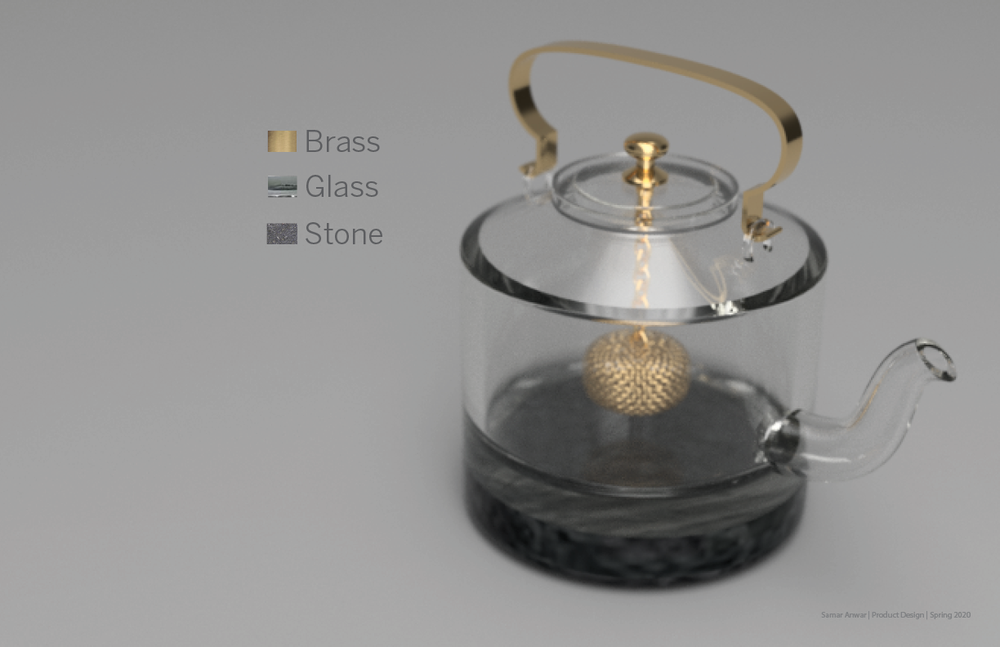

A little piece from home.
Housewares project designed to preserve culture in Pakistani communities away from the homeland.

Tea, specifically, chai is a necessity for Pakistani people. All of Pakistan runs on chai. For Pakistanis, drinking chai together brings about expressions of hospitality, friendship, and togetherness. In communities living outside of the homeland, recreating nostalgic feelings is diffcult. Over time, people of Pakistani decent have let in modern products in to their home, which isn’t always a bad thing, but it slowly causes a stripping of culture to take place as they start to assimilate to their surrounding culture.
Katli attempts to ease the problem of disconnect with the homeland Pakistanis experience aespecially in regards to a favorite past time: drinking chai.
In an effort to bring back memories of roaming through the streets in Pakistan, the product is modeled after the teapots usually seen at regularly visited tea stalls. Katli also preserves the identity and culture that fluctuates within Pakistani families abroad. Overall, it’s a product that brings a piece from back home into the home.